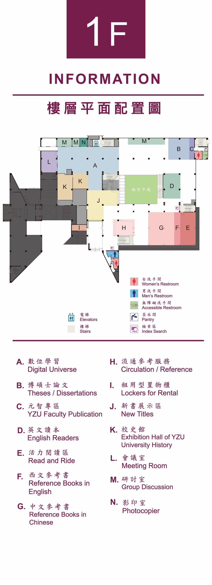
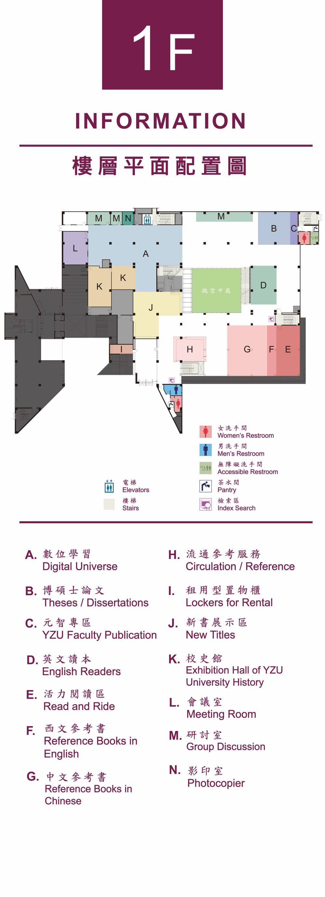

第6ステーション：アクティブリーディングエリア

読書スタイルがますます多様化する今日、読書は動きと楽しさに満ちたものにもなります。ここには静音フィットネスバイクが設置されており、運動しながら読書が楽しめます。
ユニークな形のジャイロチェアは、アート作品であると同時に心を解きほぐす大型おもちゃでもあります。カラフルなラウンジチェアは、学生たちに快適で自由な休憩スペースを提供します。
このエリアはまた、映像上映やオープン形式のディスカッション活動の主要なスペースでもあり、読書と生活が巧みに融合した場所です。